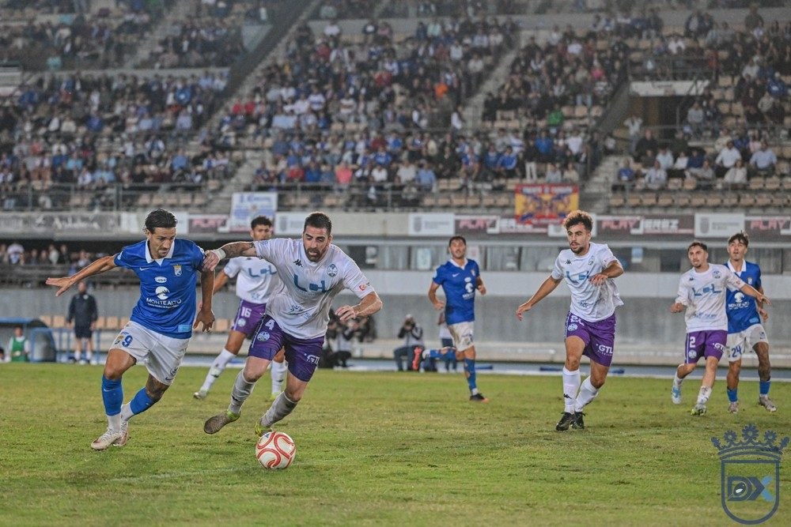

The newly promoted overtake: four of the top six came up from Tercera this summer

Photo: Diario XerecistaFour of the top six in Group IV of Segunda RFEF are newly promoted. After nine matchdays, Ciudad de Lucena are second, Don Benito third, Badajoz fourth and Mijas Las Lagunas sixth. Only Recreativo de Huelva, the leaders, and Betis B, in fifth, break the pattern.
The teams that came up from Tercera Federación this summer are taking centre stage in the early part of the season.
Lucena, Don Benito and Badajoz on the newcomers' podium
Ciudad de Lucena, who were promoted as champions of their Tercera group, are second with 18 points, just two behind the leaders. Don Benito, who also went up automatically, are third with 17 after winning their postponed match against Tenerife B (0-1). Badajoz, who were promoted through the play-offs, are fourth with 16.
Mijas Las Lagunas, also promoted automatically, complete the group in sixth with 14 points, one off the play-offs.
Those relegated from Primera Federación, further down
The contrast comes from the four teams relegated from Primera Federación. Only Betis B, fifth with 15 points, are in the top half. Sevilla Atlético are seventh with 13, while Atlético Sanluqueño (13th, 10 points) and Marbella (15th, 7 points) are in the lower reaches.
Xerez CD are tenth with 12 points, three off the play-offs. On Sunday they visit Atlético Sanluqueño at El Palmar at 12:30.
🇪🇸 Leer en español ← Back to home